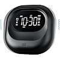

Guía hecha desde la experiencia, no desde la ficha del producto
Alarmas para sordos que vibran: guía y comparativa
Si no oyes bien o no oyes nada, una alarma que solo suena no es una alarma. Aquí encontrarás qué tipos de despertador vibratorio existen, cómo elegir y cuál nos convenció más al probarlos.
Escrita por una persona sorda · Con pruebas prácticas

Nuestra elección- Experiencia de primera manoEl creador de la guía es sordo.
- Pruebas prácticasProbamos sistemas en entornos con personas sordas.
- Comparativa claraTipos de aviso y criterios para elegir.
- Transparencia editorialIndicamos limitaciones y afiliación.
Transparencia: esta página puede contener enlaces de afiliado. Si realizas una compra a través de uno de ellos, podemos recibir una comisión sin coste adicional para ti.
Si solo quieres saber qué recomendamos
Mesqool – Despertador con vibración recargable
Es la alarma con vibración que más nos convenció durante nuestras pruebas y la que consideramos más útil y práctica para el día a día.
- Despierta con vibración, sin depender de oír la alarma.
- Es recargable: no hay que cambiar pilas.
- Tiene pantalla digital con la hora a la vista.
- Es nuestra experiencia y valoración práctica, no un estudio científico.
Cómo funcionan los avisos
Comparativa de sistemas de alarma vibratoria
Comparamos por tipo de aviso, no por ficha técnica: lo que importa es cómo te despierta cada sistema.
| Sistema | Cómo funciona | A tener en cuenta |
|---|---|---|
| Nuestra elecciónMesqool, despertador vibratorio | Despertador con vibración, recargable y con pantalla digital. | Consulta la ficha de Amazon para ver cómo vibra y se coloca. |
| Vibración bajo almohada o colchón | Un vibrador queda cerca de ti mientras duermes. | Importan la colocación y que la intensidad te despierte. |
| Vibración en la muñeca | Una pulsera o reloj vibra en la muñeca. | Hay que llevarla puesta: revisa comodidad y batería. |
| Sonido + vibración | Combina el aviso sonoro con la vibración. | Útil si percibes parte del sonido; si no, la vibración debe bastar. |
| Luz + vibración | Añade un destello al aviso vibratorio. | Funciona como refuerzo de la vibración. |
Lo que de verdad importa al elegir un despertador para sordos
- Vibración
- Es lo que te despierta: si es débil, la alarma falla justo cuando la necesitas.
- Colocación
- Un vibrador mal situado puede no notarse; cuanto más cerca del cuerpo, más fácil percibirlo.
- Batería y autonomía
- Un aparato descargado no avisa. Importa cada cuánto hay que cargarlo y si lo recordarás.
- Comodidad
- Si molesta al dormir, acabarás dejándolo de usar.
- Facilidad de uso y configuración
- Una alarma difícil de programar genera errores de hora, y un error significa no despertar.
- Sonido y luz
- Son refuerzos útiles si percibes parte del sonido o de la luz, pero no deberían ser el único aviso.
Errores frecuentes al elegir una alarma vibratoria
- Fijarse únicamente en el precio.
- No mirar dónde se coloca el vibrador.
- Ignorar la autonomía de la batería.
- No comprobar si la intensidad es suficiente para ti.
- No tener en cuenta la comodidad al dormir.
¿Qué necesitas tú?
Necesito una vibración intensa
Revisa la intensidad antes de comprar.
Dato pendiente de nuestras pruebasQuiero usarla bajo la almohada
Lo decisivo es dónde se coloca el vibrador.
Dato pendiente de nuestras pruebasQuiero combinar varios avisos
Sonido y luz pueden reforzar la vibración.
Dato pendiente de nuestras pruebasBusco algo sencillo
Una pantalla clara y pocos pasos ayudan.
Nuestra elección: Mesqool en uso cotidianoQuiero una solución recargable
Se carga y no necesita pilas.
Nuestra elección: Mesqool
Cómo evaluamos las alarmas
No publicamos cifras: contamos lo que investigamos y probamos, y lo que nos funcionó.
Investigación
Revisamos qué soluciones de aviso existen.
Comparación
Las ordenamos por tipo de aviso y criterios útiles.
Pruebas prácticas
Probamos sistemas en entornos donde conviven y reciben atención personas sordas.
Valoración
Juzgamos su utilidad y practicidad cotidiana.
Recomendación
Recomendamos lo que mejor funcionó, con sus limitaciones.
Esta web no habla de un problema abstracto. Está creada desde la experiencia de quien lo vive.
Por qué existe esta guía
Quien creó esta web es sordo y conoce de primera mano lo difícil que puede ser despertarse con una alarma convencional.
Antes de recomendar nada, investigamos diferentes soluciones y probamos varios sistemas de alarma vibratoria en entornos donde conviven y reciben atención personas sordas, incluida una residencia especializada. De todos, el Mesqool fue, con diferencia, el que consideramos más útil y práctico.
Es nuestra valoración práctica, no una verdad universal: cada persona percibe la vibración de forma distinta.
Lo que nos gusta
- La vibración despierta sin necesidad de oír.
- Al ser recargable, no hay que cambiar pilas.
- La hora se ve de un vistazo.
- Fue el más práctico en nuestro uso diario.
Lo que deberías tener en cuenta
- La sensibilidad a la vibración varía de una persona a otra.
- Hay que acordarse de cargarlo.
- Características, precio y disponibilidad pueden cambiar: revisa la ficha de Amazon.
Preguntas frecuentes
¿Sirve una alarma vibratoria si tengo pérdida auditiva leve?
Puede servir, y además puedes combinarla con sonido o luz. Lo importante es que la vibración te despierte por sí sola.
¿Solo con vibración es suficiente para despertar?
Depende de cada persona. Por eso conviene que la intensidad sea suficiente para ti y que el vibrador esté bien colocado.
¿Dónde se coloca el vibrador?
Depende del modelo: bajo la almohada, bajo el colchón o en la muñeca. Revisa en la ficha del producto cómo se usa.
¿Cuánto cuesta el Mesqool?
El precio cambia con el tiempo, así que no lo indicamos aquí. Consulta la ficha de Amazon.
¿Por qué recomendáis el Mesqool?
Porque tras investigar y probar diferentes sistemas fue el que nuestro equipo consideró más útil y práctico para el uso cotidiano.
¿Tenéis relación con Amazon?
Esta página puede contener enlaces de afiliado: si compras a través de ellos, podemos recibir una comisión sin coste adicional para ti.
¿Quieres comprobar nuestra recomendación?
El Mesqool es el despertador vibratorio que más nos convenció. Revisa su ficha y decide con calma.
Ver esta alarma en Amazon (se abre en una pestaña nueva)